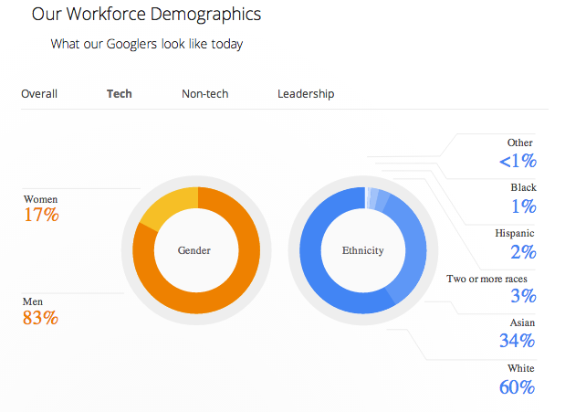

Week 4: Cultural
August 10th, 2014

Tech has a problem. Unluckily, it's also a problem that plagues virtually all industries, and it is so pervasive that the fantasy of completely solving it would require many people in positions of power to abandon the deeply ingrained prejudices and beliefs they may not even realize they have.
The problem is the lack of women and other minorities in the tech world, particularly in engineering and development roles. Some of the largest tech companies were pressured this year to release their "diversity stats", which highlight just how predominantly white and male the tech industry is.
And the paltry representation of women and minorities in tech jobs belies a more insidious "culture" problem among tech companies. The emphasis on "cultural fit" when evaluating candidates for positions is often conflated with gender/racial sameness, and you end up with white male programmers hiring other white male programmers who they "relate to culturally."
An office culture that lacks diverse voices and points of view runs the risk of alienating the few women and minorities who they do end up hiring, and greatly limits the variety of ideas and experiences these individuals can bring to the table. Sadly, work environments where the majority of positions of power are held by men can and do lead to incidents of harassment, and public shaming of women who speak out against these issues.
However, there are many hopeful signs that things are looking up for women and minorities in tech. First, the fact that large and influential companies like Twitter and Google release diversity stats is very encouraging, because it shows that they actually do realize the importance of diversity in tech.
Second, many initiatives have sprung up to provide scholarships, training, and support for girls, women, and minorities to learn to code. This is particularly important for young women still in school, who are traditionally discouraged from pursuing careers or interests in sciences, engineering, and technology. Google is a prominent backer of one such initiative, and others, like Hackbright, Ada, and Girls Who Code, are doing their part to make coding accessible to women.
There are dozens of other organizations that are worth checking out for those of you interested in these issues. Two of my favorites include:
- Model View Culture, a blog dedicated to covering technology, culture, and diversity, with recent issues on topics ranging from open source culture, to queer voices in tech, to navigating funding a startup.
- Double Union, a San Francisco feminist hacker and maker space where women can work together on projects in a safe and supportive environment.
I feel hopeful that, as this issue receives more and more attention in the media and in the public consciousness, that progress will continue to be made to make tech more inclusive for everyone.